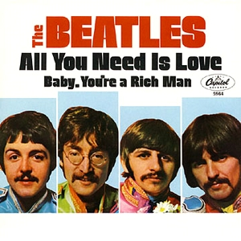

Day 6

The Beatles - All You Need Is Love - 1967
引用维基：
On 18 May 1967, the Beatles signed a contract to appear as Britain's representatives on Our World, which was to be broadcast live internationally, via satellite, on 25 June.[2] The Beatles were asked to provide a song with a message that could be easily understood by everyone.
Love, love, love Love, love, love Love, love, love There's nothing you can do that can't be done Nothing you can sing that can't be sung Nothing you can say, but you can learn how to play the game It's easy Nothing you can make that can't be made No one you can save that can't be saved Nothing you can do, but you can learn how to be you in time It's easy All you need is love, all you need is love All you need is love, love, love is all you need All you need is love All you need is love, love, love is all you need There's nothing you can know that isn't known Nothing you can see that isn't shown There's nowhere you can be that isn't where you're meant to be It's easy All you need is love, all you need is love All you need is love, love, love is all you need All you need is love (All together now) All you need is love (Everybody) All you need is love, love, love is all you need Love is all you need Love is all you need Love is all you need Love is all you need Love is all you need Love is all you need Love is all you need Love is all you need Love is all you need Love is all you need Love is all you need Yesterday Oh yeah (She love you, yeah, yeah, yeah) (She love you, yeah, yeah, yeah)